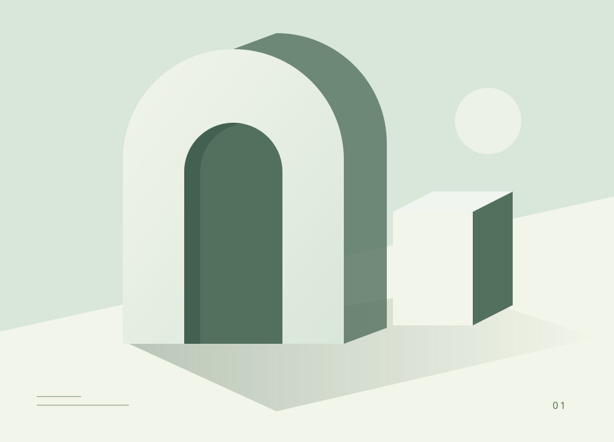

Редактирование статьи
Записи / Пространство для главного
Ручное сохранение · версия 12 · 7 ноября, 12:48 МСККак выглядит редактор для Автора →
Нажмите «Сохранить», чтобы применить изменения. При уходе они будут потеряны.
На сайте: версия 12, Активна
Абзац ⌄│BI↗≡☷│↶ ↷
ЗАГОЛОВОК
Пространство для главного: как находить ясность
Краткое описание: О внимании к деталям и свободе от лишнего.

Обложка · готоваЗаменить
Ясность — не отсутствие деталей. Это умение дать каждой детали своё место. Когда у пространства появляется структура, внимание возвращается к главному.
Начать с контекста
Какую задачу мы решаем? Для кого создаём? Ответы становятся опорой для следующих шагов и помогают сохранять смысл изменений.
Добавить блок · текст, изображение или цитату
648 слов · примерно 6 минут чтения · хранятся последние 10 версий статьи